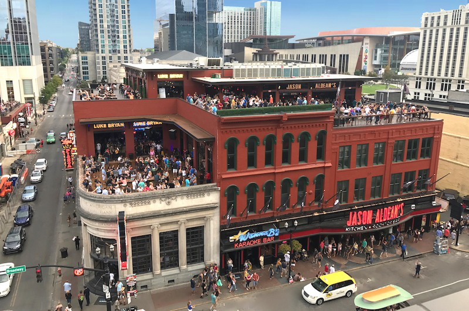
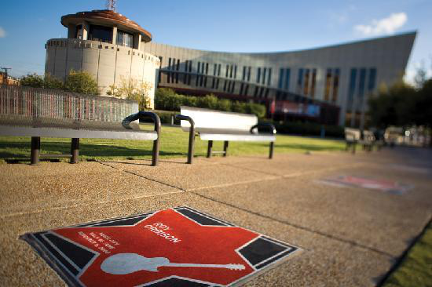

Nashville’s Best Country Music Attractions
The town of Nashville was founded by James Robertson, John Donelson, and a party of Overmountain Men in 1779, near the original Cumberland settlement of Fort Nashborough. It was named for Francis Nash, the American Revolutionary War hero.
 